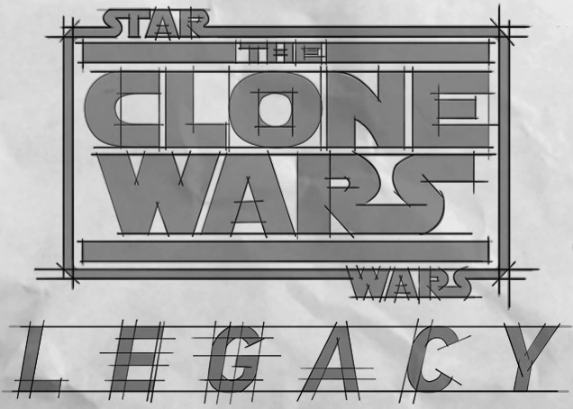

Back in March 2013, Star Wars The Clone Wars was cancelled with 52 episodes left unfinished, in 2020 12 of those episodes where completed.
This site details the 13 Story Arcs that remained at the time of the original cancellation.
Please click one of the buttons below to list the story arcs meant for those seasons: